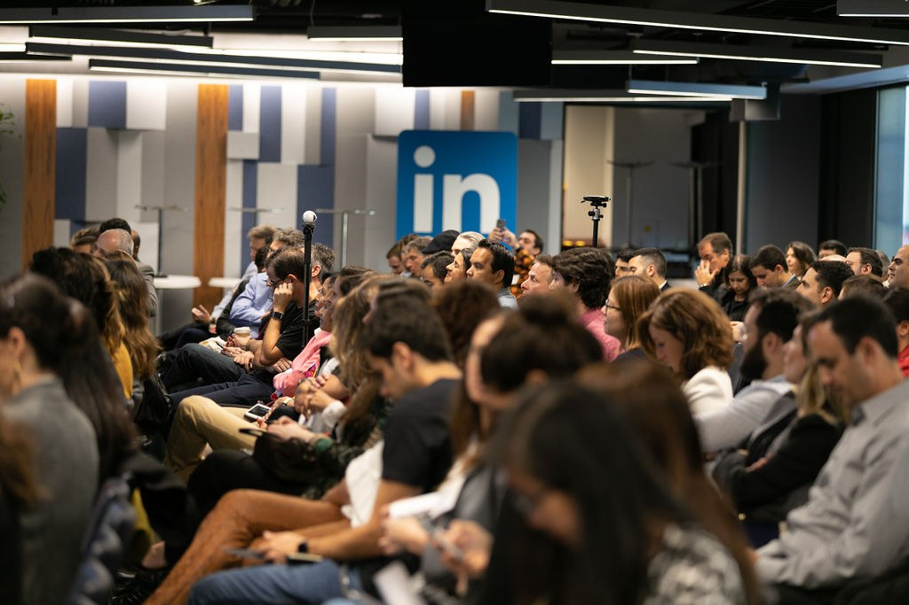

A sublimely talented young trombonist and vocalist versed in jazz, Brazilian music and the Afro-Cuban tradition, Bay Area-born Natalie Cressman teams up with Ian Faquini, a Brazilian composer, guitarist, and vocalist for an amazing evening of music featuring sensuous material sung in Portuguese, English, and French. Their sophomore release Auburn Whispers (2022) is considered one of the best albums of 2022!
Community with over 20 thousand people: entrepreneurs, investors, tech leaders, academia. Launched in 2010 BayBrazil has become a reference in the Brazilian-American tech community looking to do business with Brazil & Silicon Valley, get informed about market trends and leading companies, interact with major players and establish new bilateral ties.
